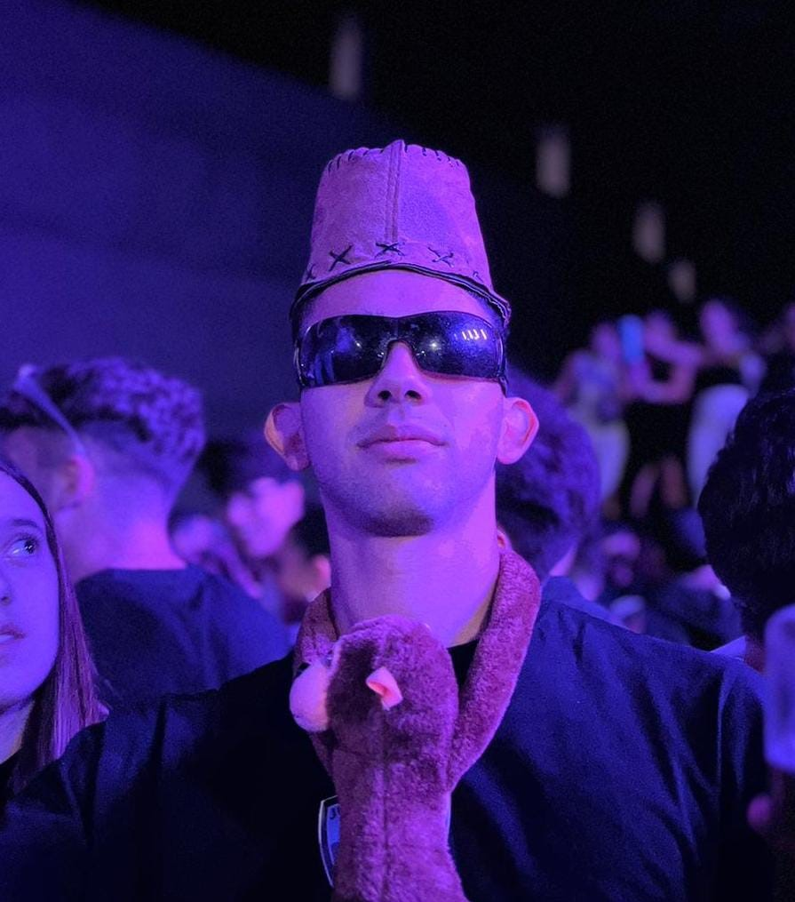

Miembros

Juano: Dios omnipresente creador del Juanonismo

Oscar: tu negrito favorito

Alberto: Profeta de señor Juano omnipotente en el mundo conocido como tierra

Samuel: si
Martin: Rey y creador del juanonismo en el mundo
Rodrigo: defensor del pueblo

Enrique: Sicario

Bonito: el sabio de los 3 pescaos
Pedro: cardenal de la creencia

Javier: Lateral izquierdo de Los profetas
Borrella: Desaparecido ¡Se busca!

Carla: Descripción

Julia: Descripción